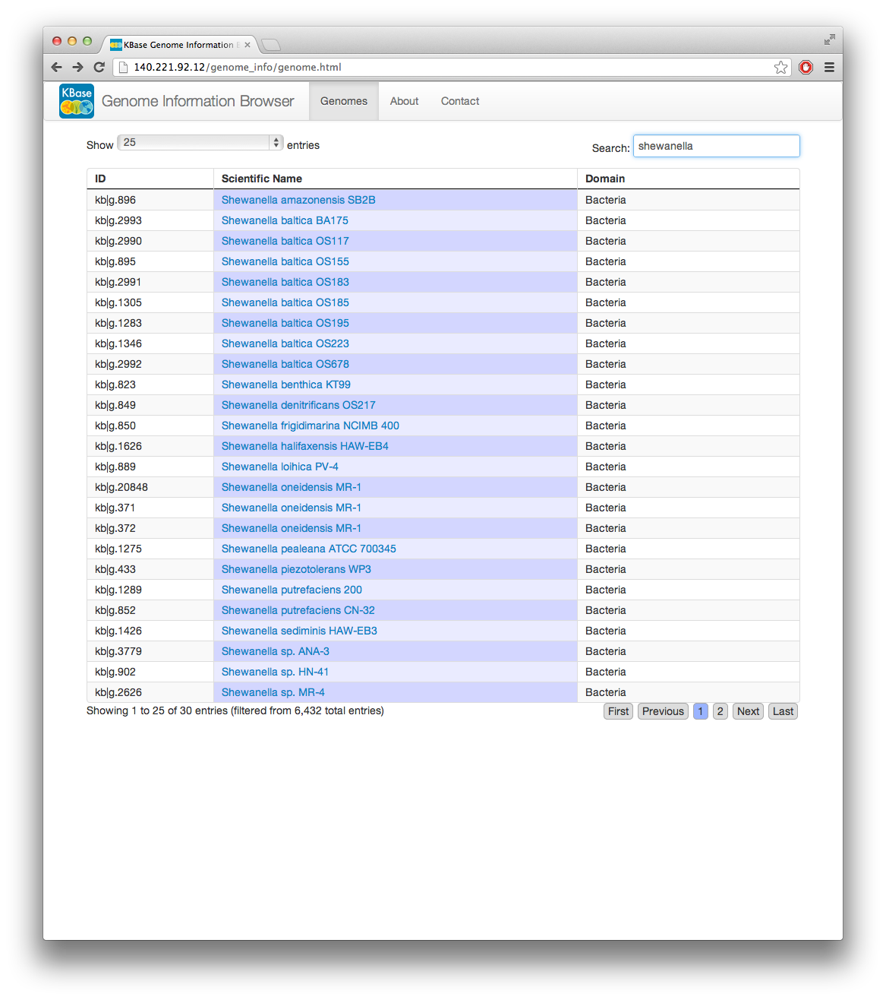

Prerequisites: IRIS, Genome Annotation Tutorial, Workspaces Tutorial
Set up a workspace to store the input and output data objects. From the IRIS command prompt, use the authenticate command to login.
>/ authenticateThis will bring up a login window where you can enter your KBase username and password. Once logged in we can either select an existing workspace to use, or create a new one. This can easily be done using the Workspace Browser. To do this in IRIS, use the kbws-workspace command with no arguments to view the currently selected workspace or give it a workspace name as an argument to set the workspace. To create a new workspace, use kbws-createws WorkspaceName GlobalPermissions. If you want to list the available workspaces, use the kbws-list command.
>/ kbws-createws psd_fba_model r Workspace created with name: psd_fba_model Command completed. >/ kbws-list ID Owner Last Mod Objects User perm Default perm psd_fba_model psdehal 2013-02-20T00:24:31 0 a r Command completed. >/ kbws-workspace psd_fba_model Current workspace is: psd_fba_model Command completed.Here, I have created a new workspace called "psd_fba_model" with the permissions set to "readable" for the public. Then listed the available workspaces and set my current workspace to the "psd_fba_model".
We must decide which genome we want to use to build a model. We can either select a genome that is already in our Central Data Store (CDS) or we can use a genome that we have annotated ourselves. In this tutorial, we will select a genome from the CDS, but if you want to use a genome not in the CDS, or alter the annotation of a KBase genome, please refer to the Genome Annotation Tutorial which will guide you through the process of annotating a genome from an assembly fasta file.
To import a genome fromt the CDS into our workspace, we use the command kbfba-loadgenome. To use this command, we must give it a valid KBase genome id. The easiest way to find the KBase genome id is to use the Genome Browser. In this example, we will use the genome of Shewanella oneidensis MR-1. By typing "shewanella" into the search box, we can quickly find the genomes whose scientific name match the search string.  We will use the "kb|g.20848" KBase genome id. We can now load the genome into our workspace by typing the following command:
>/ kbfba-loadgenome kb|g.20848 Genome successfully loaded to workspace: Object ID: kb|g.20848 Type: Genome Workspace: psd_fba_model Owner: psdehal Instance: 0 Moddate: 2013-02-20T01:08:35 Last cmd: genome_to_workspace Modified by: psdehal Perm ref: 0D013D06-7AFA-11E2-9460-C6157082D269 Checksum: cb2042097cbeff6d4d4c82e4d14997ac scientific_name: Shewanella oneidensis MR-1 domain: Bacteria number_features: 4741 id: kb|g.20848 gc: 2354767 size: 5131416 Command completed.The "kb|g.20848" genome of Shewanella oneidensis MR-1 has now been loaded into our workspace "psd_fba_model" as a genome object. The command also returns meta-data that has been associated with the object. We can verify that this genome object is in our workspace by using the kbws-listobj command:
>/ kbws-listobj ID Type WS Vers Owner Last modby Cmd Moddate kb|g.20848 Genome 2013-02-20T01:22:06 0 psdehal psdehal genome_to_workspace psdehal Command completed.
>/ kbfba-buildfbamodel kb|g.20848 Model successfully generated in workspace: Object ID: kb|g.20848.fbamdl.24 Type: Model Workspace: psd_fba_model Owner: psdehal Instance: 0 Moddate: 2013-02-20T01:29:19 Last cmd: genome_to_fbamodel Modified by: psdehal Perm ref: F2CCDFA0-7AFC-11E2-A65F-2D017082D269 Checksum: 9ede3f209a2cb696a1ca634a8c62551f name: Shewanella oneidensis MR-1 number_compartments: 2 number_compounds: 107 number_reactions: 29 number_genes: 0 number_biomasscpd: 60 id: Kbasekb|g.20848 type: Singlegenome annotation_uuid: 0C62524A-7AFA-11E2-958C-3B1C7082D269 Command completed.
>/ kbws-listobj ID Type WS Vers Owner Last modby Cmd Moddate kb|g.20848 Genome 2013-02-20T02:20:19 0 psdehal psdehal genome_to_workspace psdehal kb|g.20848.fbamdl.24 Model 2013-02-20T02:20:19 0 psdehal psdehal genome_to_fbamodel psdehal Command completed.If we